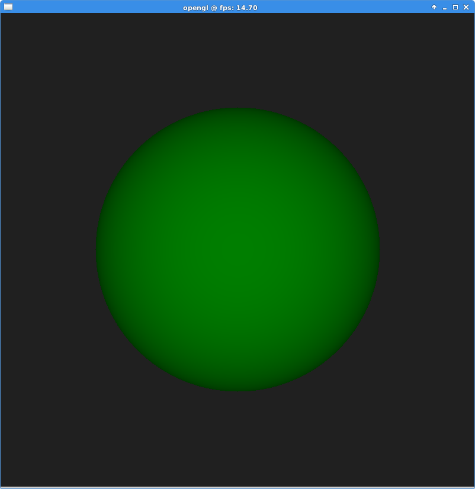

My experiment turning my on-line OpenGL tutorials into an e-book was waaay more successful (and fun) than I imagined. It was nice getting closure by archiving my website material into a book, and actually publishing something to justify my last year or two's existence as a research fellow. It's also given me my first experience with on-line publishing of digital work - I have to try a game next! However, I now have a gap to fill on my website. I'm thinking of doing some different topics as tutorials:
I also want to write a bit about my experiences with publishing an e-book, and look into non-Amazon alternatives in the next few days.
I want to try something useful with compute shaders (GPGPU) within OpenGL, as opposed to using CUDA or something. Today I coded up a little OpenGL ray tracing demo. I just did it off the top off my head - wasn't very difficult, although I made some grammar mistakes in GLSL that produced some weird graphical offsets that had me scratching my head for a while.
This is just a basic 800x800 window generating that many rays. I used simple intersection tests versus a sphere and a distance test for the shading. This is worked out linearly in a single CPU thread (no parallelism yet), and I write the results to a 800x800 texel GL texture. A simple screen-sized quad renders the texture - inspired by the first assignment for graphics programming at BTH. Now what I want to do is replace the CPU ray calculations with compute shader calculations that write directly to the texture. It seems like an ideal application...let's see...
Apparently you can update to the back-buffer from a compute shader - no need for the screen-sized quad any more.